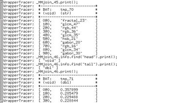

ARCHITECTURE
Recall that the reasoning model about the relevance feedback and the thesauri
are performed through (set-oriented) queries executed in the database system.
The Mirror DBMS provides the primitives for managing the images and their meta
data, as well as the probabilistic inference required during the interaction
with the user. New feature models, different clustering algorithms, or
different query modification techniques, can easily be added or
modified. Hence, a variety of multimedia retrieval systems can be
implemented by simply changing the sequence of queries issued in the
DBMS.
The three windows in the background of the
first screenshot of this demo correspond to
the conceptual, the logical, and the physical level of the multimedia DBMS.
The physical layer is provided by the Monet
DBMS. Monet is a main-memory DBMS, that uses the binary relational
model. Below, you see a little snapshot (taken from the wrapper logs) of
intermediate results computed in the previous session:

 Home: DEMO - The Mirror MMDBMS architecture
Home: DEMO - The Mirror MMDBMS architecture
Last updated: December 9, 1999
Maintained by: arjen@acm.org